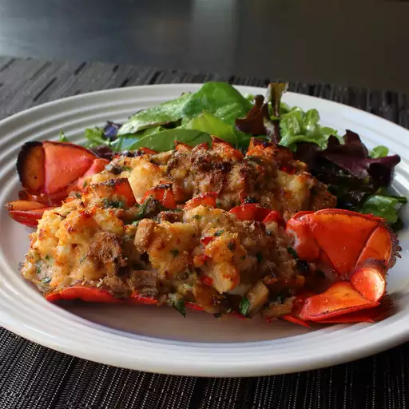

Lobster Thermidor

Description
I used a nice light sauce on this iconic special occasion dish--lobster thermidor--rather than the thick, cheesy sauce popular in the '80s. Lobster is sweet and rich tasting on its own, so the lighter sauce makes so much sense. And what's even better, you can prep these ahead of time and just pop them in the oven when your guests arrive!
Ingredients
- Lobster tails
- Butter
- Minced shallots
- Salt
- Mushrooms
- All-purpose flour
- Cognac
- Whole milk
- Heavy cream
- Tarragon
- Bread crumbs
- Parmigiano-Reggiano cheese
Steps
- Cut bottom shell of lobster tails using kitchen shears along each side where it meets the top shell; do not remove the shell at this point.
- Melt 2 tablespoons butter in a skillet over medium-high heat. Place lobster tails cut side down in the butter. Cook, covered, about 3 minutes. Turn lobster tails over (they are curved so will lean to 1 side); cover and cook 1 minute. Lean them to the other side; cover and cook 1 minute more.
- Remove from heat. Transfer lobster tails to a bowl. Remove any shell pieces from the skillet.
- Place 1 tablespoon butter in the skillet over medium heat; add shallots and pinch of salt. Cook and stir until pan starts to deglaze and shallots soften, 3 to 4 minutes. Add mushrooms; cook stir until golden brown, 5 to 6 minutes. Add flour; stir until mushrooms are coated and cook for 2 minutes. Pour in cognac; use a kitchen torch to flame cognac to burn off alcohol. This will take just a few seconds. Add milk; cook and stir until pan is completely deglazed and milk begins to thicken and turn bubbly, about 2 minutes. Remove from heat. Stir in creme fraiche. Let cool.
- Remove lobster meat from the shell, leaving top shell intact. Remove any bits of bottom shell from the meat.
- Preheat oven to 450 degrees F (230 degrees C). Line a baking pan with crinkled up foil. Make 4 channel-like indentations in the foil to hold and stabilize the lobster tails as they bake.
- Slice lobster meat down the middle and check for and remove any dark veins. Chop into 1/2-inch pieces. Transfer meat to a mixing bowl. Add cooled sauce, tarragon, pinch of salt, and cayenne pepper. Stir gently until well blended.
- Divide mixture among the lobster tail shells; place in prepared foil-lined pan. Sprinkle each lobster tail with about 1/2 teaspoon bread crumbs and 1/2 teaspoon grated cheese. Drizzle melted butter on the stuffed shells.
- Bake in preheated oven until nicely browned and heated through, about 10 minutes. If you like, you can turn on the broiler and broil 1 minute until tops are golden and crispy.
Home